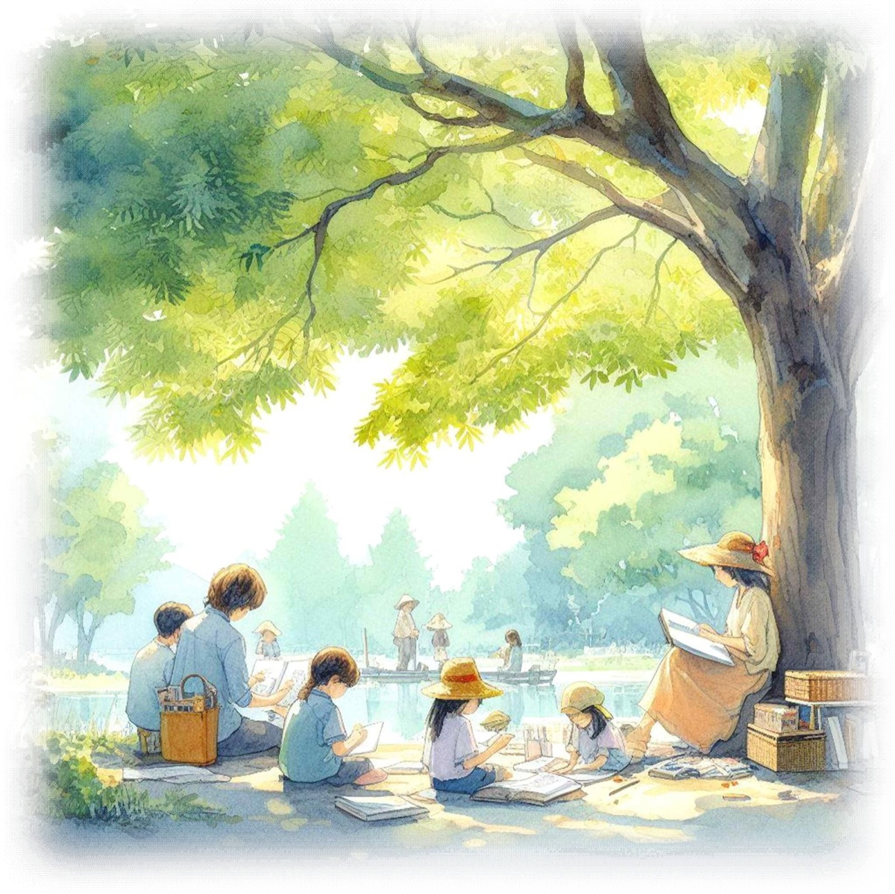

역대 임원진¶

이 페이지는 두 부분으로 되어 있습니다.
- 인물별 정리 — 원문의 연도별 명단을 사람 기준으로 다시 묶은 표입니다. 관련 글 칸의 링크를 누르면 그 인물이 언급된 본문(Part 1·2)이나 본인이 쓴 에세이로 이동합니다.
- 원문 — 20년사 책에 실린 명단을 그대로 옮긴 것입니다. 추진위원·창립회원, 분회장·위원회 등 표에 담지 않은 내용은 여기서 확인할 수 있습니다.
인물별 정리¶
이 표는 2001년 12월 이우교육공동체 결성 이후의 공식 임원(고문/대표·공동대표/부대표/사무국장·집행위원장/감사)만을 대상으로 합니다. 설립추진위원·창립회원, 분회장, 2014년 이후의 위원회(교육위·조직위 등) 위원은 표에 넣지 않았으니 원문을 참고하세요. 같은 사람이 여러 해 연속으로 같은 직책을 맡은 경우 한 행으로 묶었고, 원문의 '공동 대표'는 '대표'로, '회계감사'는 '감사'로 적었습니다.
| 재임 | 직책 | 성명 | 비고 | 관련 글 |
|---|---|---|---|---|
| 2001.12~2006.02 | 고문 | 이명현 | 이우교육공동체의 설립과 운영 | |
| 2001.12~2006.02 | 고문 | 전보삼 | 이우교육공동체의 설립과 운영 | |
| ?~2003 | 대표 | 강지원 | 이우교육공동체의 설립과 운영 | |
| 2001.12~2004.05 | 대표 | 이종태 | 이우교육공동체의 설립과 운영 | |
| 2001.12~2004.05 | 대표 | 정광필 | '내일을 여는 학교' 준비 모임 미미한 방어전도 의미가 있을까? (장지혜) |
|
| 2001.12~2012.04 | 대표 | 하동근 | 이우교육공동체의 설립과 운영 | |
| 2012.04~2013.04 | 대표 | 하동근(?) | ||
| 2001.12~2004.05 | 부대표 | 김미숙 | 이우교육공동체의 설립과 운영 | |
| 2001.12~2003 | 부대표 | 이재철 | '내일을 여는 학교' 준비 모임 | |
| 2001.12~2004.05 | 부대표 | 홍인표 | '내일을 여는 학교' 준비 모임 | |
| 2001.12~2003 | 감사 | 민재기 | 학교 부지 선정과 인가 | |
| 2001.12~2003 | 감사 | 전호근 | ||
| 2002.12~2006.02 | 고문 | 채규철 | 2002.12.22. 고문으로 합류(소스 명시) | 이우교육공동체의 설립과 운영 |
| 2003~2006.02 | 고문 | 강지원 | ||
| 2003~2004.05 | 부대표 | 김혜영 | 함께여는교육연구소 - '교육희망'의 연대와 확산 | |
| 2003~2004.05 | 부대표 | 김혜장 | 이우교육공동체와 학교법인 이우학원 | |
| 2003~2007.03 | 사무국장 | 이재철 | ||
| 2004.05~2006.02 | 대표 | 이경재 | 함께여는교육연구소 - '교육희망'의 연대와 확산 | |
| 2004.05~2006.02 | 부대표 | 남미경 | ||
| 2004.05~2006.02 | 부대표 | 신상철 | 학교 교사(校舍) 건립 | |
| 2004.05~2006.02 | 부대표 | 이세용 | 학교 부지 선정과 인가 | |
| 2004.05~2009.05 | 부대표 | 이재철 | ||
| 2005.02~2008.03 | 부대표 | 이태성 | 학교 교사(校舍) 건립 | |
| 2006.02~2009.05 | 대표 | 신상열 | 에세이: 내 인생의 황금기 이우교육공동체와 지역 활동 |
|
| 2006.02~2009.05 | 부대표 | 민순기 | 에세이: 나와 공동체, 분회의 기억 사회적협동조합 사다리 설립과 활동 |
|
| 2006.02~2008.03 | 부대표 | 박배영 | ||
| 2006.02~2008.03 | 부대표 | 전호근 | ||
| 2007.03~2009.05 | 감사 | 신명철 | 제2기 이우교육공동체의 출범 | |
| 2008.03~2009.05 | 부대표 | 신희준 | 이우교육공동체의 설립과 운영 | |
| 2008.03~2009.05 | 부대표 | 전숙례 | ||
| 2008.03~2009.05 | 부대표 | 최화순 | ||
| 2009.05~2015.04 | 대표 | 신명철 | ||
| 2009.05~2013.12 | 부대표 | 민재기 | ||
| 2009.05~2013.12 | 부대표 | 박명규 | ||
| 2009.05~2011 | 부대표 | 백희봉 | '내일을 여는 학교' 준비 모임 이우교육공동체와 나 (이현영) |
|
| 2009.05~2011 | 감사 | 전명진 | 제2기 이우교육공동체의 출범 나와 공동체 (하길임) |
|
| 2010.04~2013.04 | 감사 | 박명규 | 2010.04~2013.04 기간 부대표직과 겸임(소스 원문 그대로 반영, 겸직 사유 불명) | |
| 2012.04~2013.12 | 부대표 | 김인현 | 에세이: 청풍과 공동체 제2기 이우교육공동체의 출범 |
|
| 2013.04~2013.12 | 감사 | 김인현 | ||
| 2013.12~2014.11 | 대표 | 장석 | 이우교육공동체와 학교법인 이우학원 | |
| 2013.12~2014.11 | 집행위원장 | 김광범 | 제2기 이우교육공동체의 출범 이우교육공동체와 나 (이현영) |
|
| 2013.12~2014.04 | 감사 | 한동건 | 소스 각주: 2013년12월 임시총회 회의록에 '유임' 표현이 있으나 이우10년사 임원 목록에는 없음 — 재임 여부 논란 | |
| 2014.04~2015.04 | 감사 | 김인현 | ||
| 2015.04~2019.03 | 대표 | 박형영 | 제2기 이우교육공동체의 출범 | |
| 2015.04~2019.03 | 부대표 | 김광범 | ||
| 2015.04~2016.04 | 감사 | 민순기 | ||
| 2016.04~2019.03 | 감사 | 전창배 | ||
| 2019.03~2023 | 대표 | 장지혜 | 에세이: 미미한 방어전도 의미가 있을까? 제2기 이우교육공동체의 출범 나와 공동체 (하길임) |
|
| 2019.03~2020.05 | 감사 | 현영창 | 제2기 이우교육공동체의 조직 운영과 주요 활동 | |
| 2020.05~2023 | 감사 | 김인출 |
원문¶
아래는 《이우교육공동체 20년사》 부록 '역대 임원진'을 그대로 옮긴 것입니다. 원문의 표기(띄어쓰기, 물음표, 날짜 등)는 고치지 않았습니다.
2001.7.1. '(가칭) 내일을 여는 학교' 설립 추진위원회 추진위원¶
- 이명현(서울대 교수, 철학, 전 교육부 장관)
- 전보삼(신구대 교수, 철학, 만해기념관 관장, 성남시민포럼 대표)
- 이기범(숙명여대 교수, 교육학, 전국공동육아협동조합 이사장)
- 이종태(교육학 박사, 교육개발원 기획팀장)
- 정유성(서강대 교수, 교육학)
- 김미숙(성남․분당 인간교육실현 학부모연대 회장)
- 김인호(신구대 교수, 조경학, 환경교육정보센터 연구위원)
- 민재기(공인회계사, 리딩코리아컨설팅 대표이사)
- 박성호(도시계획기술사, 환경포럼 이사)
- 신영수(현대건설 이사, 전 문화일보 국장)
- 이세용(전국 학부모연대 부대표, 삼성생명 사회건강연구소 연구원)
- 전승훈(경원대 교수, 조경학)
- 정일연(변호사)
- 하동근(성남 문화연구소 대표)
- 김명철(감정평가사, 새터엔지니어링 대표이사)
- 박문태(코세 로지스틱스 회장)
- 유대기(홍익미디어 대표이사)
- 장석(중앙시푸드 전무이사)
- 정광춘(잉크테크 대표이사)
- 강태원(준비모임, 영어)
- 김용우(준비모임, 원주호저생협 사업이사)
- 백희봉(준비모임, 수학)
- 이광호(준비모임 사무국장, 국어)
- 이재철(준비모임 부대표)
- 이현영(준비모임, 철학)
- 정광필(준비모임 대표)
- 홍인표(준비모임 부대표)
2001.12.2. 이우교육공동체 창립회원¶
강지원, 구자형, 김명철, 김미숙, 김용우, 김장권, 김혜영, 김혜장, 나기남, 나선미, 류방난, 민재기, 민혜경, 박균배, 박문태, 박성호, 박해균, 박현숙, 배선희, 백희봉, 변갑환, 신규식, 신미용, 신상철, 신영수, 우해준 이경재, 이광호, 이동호, 이석환, 이세용, 이용국, 이유라, 이재철, 이종태, 이현영, 장 석, 전호근, 정광춘, 정광필, 정현숙, 조미영, 조상행, 조성재, 조영만, 최은현, 최점호, 하동근, 한동건, 홍인표 (총 68명)
2001.12.2. 이우교육공동체¶
고문
- 이명현(서울대 교수, 철학, 전 교육부장관)
- 전보삼(신구대 교수, 철학, 만해기념관 관장, 성남시민포럼 대표)
- 채규철(두밀리자연학교 이사장, 2002.12.22.~)
공동 대표
- 이종태(교육학 박사, 한국교육개발원 기획팀장)
- 정광필(준비모임 대표)
- 하동근(성남 문화연구소 대표)
- 강지원(변호사, ?~)
부 대표
- 이재철(준비모임 부대표, 환경운동연합 운영위원)
- 홍인표(준비모임 부대표)
- 김미숙(성남분당 인간교육실현 학부모 연대 회장)
회계감사
- 민재기(공인회계사, 리딩코리아컨설팅 대표이사)
- 전호근
2001.12.2. 이우학교 설립추진 위원회¶
추진위원
- 이기범(숙명여대 교수, 교육학, 전국공동육아협동조합 이사장)
- 정유성(서강대 교수, 교육학,)
- 최충옥(경기대 교수, 교육학, 전 한국청소년개발원 원장)
- 고인룡(국립천안공업대학 건축공학과 교수)
- 김미숙(성남,분당 인간교육실현 학부모연대 회장)
- 김인호(신구대 교수, 조경학, 환경교육정보센터 연구위원)
- 박성호(도시계획기술사, 환경포럼이사)
- 박훈영(A.rum건축연구소 소장, 전 계원조형예술대 건축디자인 겸임교수)
- 신규식(중부대교수, 건축사/도시계획기술사,유아컨설턴트 종합건축사사무소 대표)
- 신영수(현대건설 상무이사, 전 문화일보 국장)
- 이경재(한국리더십센터 소장)
- 이세용(전국 학부모연대 부대표, 삼성생명 사회건강연구소 연구원)
- 전승훈(경원대 교수, 조경학)
- 정일연(변호사)
- 허서구(studio 許家房, 건축가)
- 김명철(감정평가사, 새터엔지니어링 대표이사)
- 박문태(코세 로지스틱스 회장)
- 유대기(홍익 미디어 대표이사)
- 장 석(중앙시푸드 전무이사)
- 정광춘(잉크테크 대표이사)
- 김용우(준비모임, 원조호저생협 상무이사)
- 백희봉(준비모임)
- 이광호(준비모임, 사무국장)
- 이현영(준비모임, 기획연구국장)
2003년¶
- 고문 : 이명현, 전보삼, 채규철(2002.12.22.~), 강지원
- 대표 : 이종태, 정광필, 하동근
- 부대표 : 김미숙, 홍인표, 김혜장, 김혜영
- 사무국장 : 이재철
- 분회장 : (고울, 용수, 과천, 아름, 금정, 내일, 수정중원)
- 홍보부 : 배선희
- 생협 : 김용우
- 재정위원장 : 정광춘
2004년¶
(2004.5.16.~)
- 고문 : 이명현, 전보삼, 채규철, 강지원
- 대표 : 하동근, 이경재
- 부대표 : 이세용, 신상철, 남미경, 이재철
- 사무국장 : 이재철
- 분회장 : 강병희(고울), 윤유경(용수), 우해준(아름), 이태성(금정), 김장권(성남), 이용국(과천)
- 홍보부 : 배선희, 하정숙
- 생협 : 김용우
- 재정위원장 : 정광춘
2005년¶
(2005.2.20.~)
- 고문 : 채규철, 강지원, 전보삼, 이명현
- 대표 : 하동근, 이경재
- 부대표 : 이재철, 이세용, 신상철, 남미경, 이태성
- 사무국장 : 이재철
- 분회장 : 윤유경(용수), 우해준(아름), 이영희(금정내일), 홍현님(성남), 신희준(과천)
- 홍보부 : 배선희, 하정숙
- 생협 : 김용우
- 재정위원장 : 정광춘
2006년¶
(4기, 2006.02.26.~)
- 대표 : 하동근, 신상열
- 부대표 : 이재철, 이태성, 전호근, 박배영, 민순기
- 분회장 : 승흥배(아름), 조미영(과천), 배선희(용수), 채상목(금정내일), 이석계(성남)
- 사무국장 : 이재철
- 홍보부 : 배선희, 하정숙
- 생협 : 김용우
- 재정위원장 : 정광춘
2007년¶
(5기, 2007.03.18.~)
- 대표 : 하동근, 신상열
- 부대표 : 이재철, 이태성, 전호근, 박배영, 민순기
- 분회장 : 임철순(아름), 문상관(과천), 오종수(용수), 채상목(금정내일), 서성미(수정중원)
- 감사 : 신명철
2008년¶
(6기, 2008.03.23.~)
- 대표 : 하동근, 신상열
- 부대표 : 이재철, 전숙례, 최화순, 신희준, 민순기
- 분회장 : 김영묵(아름), 김경은(과천), 이희란(용수), 채상목(금정내일), 서성미(수정중원), 김란경(이과수)
- 감사 : 신명철
2009년¶
(7기, 2009.05.17.~)
- 대표 : 하동근, 신명철
- 부대표 : 민재기, 박명규, 백희봉
- 분회장 : 노복희(아름), 이병준(과천), 나선미(용수), 이태성(금정내일), 조상행(수정중원), 김희경(이과수)
- 감사 : 전명진
2010년¶
(8기, 2010.04.25.~)
- 대표 : 하동근, 신명철
- 부대표 : 민재기, 박명규, 백희봉
- 분회장 : 안민경(아름), 김미경(과천), 심명화(용수), 이태성(금정내일), 조상행(수정중원), 김인현(이과수)
- 감사 : 전명진, 박명규
2011년¶
(9기)1
- 대표 : 하동근, 신명철
- 부대표 : 민재기, 박명규
- 운영위원 : 황의숙, 박균배, 박미선, 오지영, 김은주, 김다혜, 박형영, 홍인표, 박배영, 이태성
- 재정부
- 홍보부
- 미래발전부
- 감사 : 박명규
2012년¶
(10기, 2012.04.29.~)
- 대표 : 신명철, 하동근(?)
- 부대표 : 김인현, 민재기, 박명규
- 분회장 : 박형영(아름), 박배영(이과수), 박균배(용수), 이태성(금정)
- 감사 : 박명규
- 홍인표(학교 행정실장)
- 민순기*(간사), 박미선2*(용수) : * 10주기기념사업위원회
- 혁신위원장 : 박형영
2013년¶
(11기, 2013.04.28.~)3
- 대표 : 신명철
- 부대표 : 김인현, 민재기, 박명규
- 분회장 : 김영묵(아름), 김광범(이과수), 배인정(용금성)
- 감사 : 김인현
- 홍인표(실장), 민순기(간사)
* 조직발전특별위원회 (13년5월~13년12월)
김광범, 김인현, 김희경, 민혜경, 박미선, 박형영, 이희란, 장지혜
2013년12월¶
(2013.12.01.~, 2기 준비위원회4)
- 대표: 신명철, 장석
- 집행위원장5 : 김광범
- 비전소위: 전명진
- 재정소위: 장지혜
- 조직소위: 박형영
- 분회장 : 배인정(용금성), 김영묵(아름), 김광범(이과수)
- 감사: 한동건6 (유임)
2014년¶
(2014.04.27.~)
- 대표: 신명철, 장석
- 집행위원장 : 김광범
- 비전소위 : 전명진
- 재정소위 : 장지혜
- 조직소위 : 박형영
- 분회장 : 윤경자(용금성), 민재기(아름), 김희경(이과수)
- 감사 : 김인현
2014년¶
(2014.11.30.~, 임시총회7)
- 대표 : 신명철8
- 교육연구위 : 전명진
- 재정위 : 장지혜
- 진로지원위 : 김광범
- 지역공동체위 : 박형영
- 조직위 : 없음
- 감사 : 김인현
2015년¶
(2015.4.19.~)
- 대표 : 박형영
- 부대표 : 김광범
- 교육위 : 전명진
- 조직위 : 장지혜
- 진로위 : 김광범
- 지역위 : 박형영
- 재정위 : 이상원
- 분회장 : 김희경(이과수), 김혜장(용금성)
- 감사 : 민순기
2016년¶
(2016.4.17.~)
- 대표 : 박형영
- 부대표 : 김광범
- 교육위 : 전명진
- 조직위 : 장지혜
- 진로위 : 김광범
- 지역위 : 배은숙
- 재정위 : 이상원
- 감사 : 전창배
2017년¶
(2017.4.9.~)
- 대표 : 박형영
- 부대표 : 김광범
- 교육위 : 한승수
- 조직위 : 장지혜
- 진로위 : 김광범
- 지역위 : 연인선
- 재정위 : 이상원
- 감사 : 전창배
2018년¶
(2018.3.18.~)
- 대표 : 박형영
- 부대표 : 김광범
- 교육위 : 한승수9
- 조직위 : 장지혜
- 진로위 : 이욱
- 지역위 : 연인선
- 재정위 : 이상원
- 간사 : 민순기
- 감사 : 전창배
2019년¶
(2019.03.17.~)
- 대표 : 장지혜
- 교육위 : 하길임
- 조직위 : 민순기
- 진로위 : 김문식
- 지역위 : 장지혜
- 재정위 : (조직위로 통합)
- 감사 : 현영창
2020년¶
(2020.5.24.~)
- 대표 : 장지혜
- 교육위 : 하길임
- 조직위 : 민순기
- 진로위 : 현영창
- 지역위 : 장지혜
- 감사 : 김인출
2021년¶
(2021.3.28.~)
- 대표 : 장지혜
- 교육위 : 하길임
- 조직위 : 김혜장10, 정대령
- 진로위 : 김광유
- 지역위 : 장지혜
- 감사 : 김인출
2022년¶
(2022.3.27.~)
- 대표 : 장지혜
- 교육위 : 하길임
- 조직위 : 정대령
- 진로위 : 허당
- 지역위 : 장지혜
- 감사 : 김인출
2023년¶
(2022.3.19.~)
- 대표 : 장지혜
- 교육위 : 하길임
- 조직위 : 정대령
- 진로위 : 김진수
- 지역위 : 장지혜
- 감사 : 김인출
-
총회 자료가 없음 ↩
-
10주기기념사업위원회 위원자격으로 운영위에 참여하였고, 2013년까지 이어짐 ↩
-
운영위 임원들은 유임되고, 조직발전특위가 설치됨 ↩
-
임시총회에서 2기준비위원회 조직으로 개편됨 ↩
-
2기준비위원회(약칭 2준위) 위원장으로 14년도에는 운영위가 2준위 집행부로 운영됨 ↩
-
2013년12월 임시총회회의록에 한동건 유임 표현이 있으나, 이우10년사 임원 목록에는 없음 ↩
-
2기 공동체 출범 ↩
-
임시총회에서 대표임기 및 집행부 임기를 익월 4월 총회까지로 함 ↩
-
18년4월 법인 이사장 취임으로 공석(?) ↩
-
21년8월, 법인 이사장 취임. 후임으로 정대령 선출 ↩